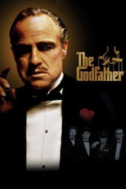

ReviewSkimmer.com
Charts
Presentation
About
The Godfather

"I've seen the movie at least 30, 40 times, and I'm still amazed at how
perfect
it is."
—
Sean Coughlin (kaffee@bestweb.net)
"The Godfather is commonly considered to be one of the "
greatest
films of all time"."
—
Brandt Sponseller
"The direction is
flawless
."
—
DaveDiggler
"Seeing The Godfather for the first time was the most
amazing
movie experiences of my life."
—
Sean Coughlin (kaffee@bestweb.net)
"But I think my
favorite
scene is the conversation Michael has with his father shortly before Vito dies."
—
erockdh-806-816399